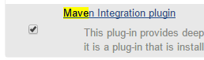
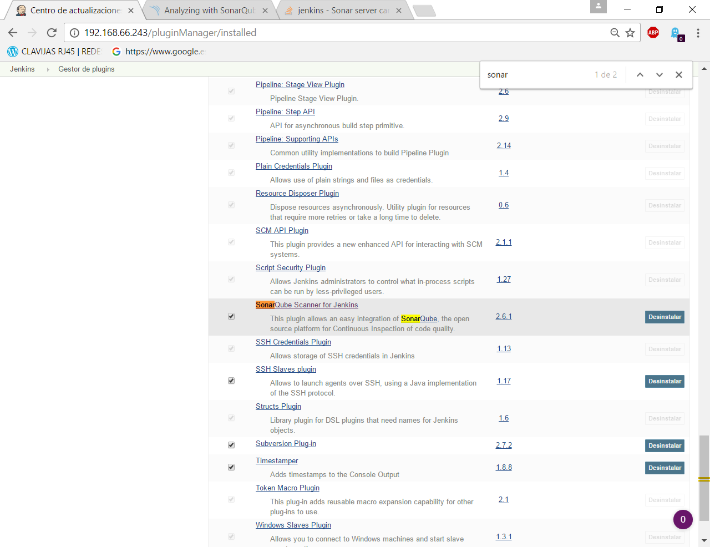
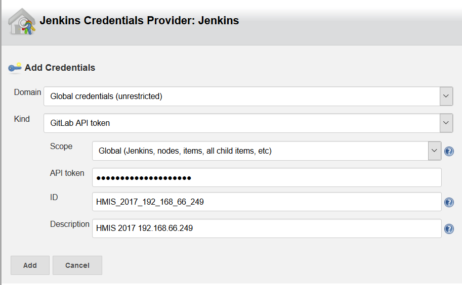

Joaquín Cañadas <jjcanada@ual.es>
Tutorial de instalación de Jenkins 2 en Ubuntu 16.04 LTS.
-
Actualizar el sistema Ubuntu 16.04 en caso de que sea necesario
-
Instalar Jenkins 2 (última versión)
-
Configurar un proxy inverso
-
Primeros pasos en Jenkins: configuración básica y plugins
Prerequisitos
1. Actualizacion del sistema
1.1. Mensaje de reinicio
Si aparece el mensaje * System restart required * ejecutar
sudo reboot -h now
Tras ello, actualizar los paquetes
sudo apt-get update -y
1.2. Actualización del nombre del host
Es posible que cuando ejecutemos una instrucción con sudo nos aparezca un mensaje de error
Unable to resolve host...En ese caso, debemos actualizar el archivo /etc/hosts con el nombre del host. Para ello, ejecutamos
more /etc/hostname
Esto mostrará el nombre del host. A continuación editamos el documento /etc/hosts y añadimos el nombre del host en la segunda linea junto a 127.0.0.1
sudo nano /etc/hosts
2. Instalar Java
Puede instalar el JDK con el siguiente comando
sudo apt-get install default-jdk -y
Puede comprobar si hay varias instalaciones de Java en uel servidor:
sudo update-alternatives --config java -l
2.1. Definiendo la Variable de Entorno JAVA_HOME
sudo nano /etc/environment
Al final de este archivo, agregue la siguiente línea, asegurándose de sustituir la ruta resaltada con la ruta de jdk en su sistema.
JAVA_HOME="/usr/lib/jvm/java-8-openjdk-amd64/jre"Guarde, salga del archivo y vuelva a cargarlo.
source /etc/environment
Ahora puede probar si la variable de entorno se ha establecido mediante la ejecución del siguiente comando:
echo $JAVA_HOMEEsto devolverá la ruta que acaba de establecer.

Instalación de Jenkins 2
3. Instalación de Jenkins mediante paquetes
Instalaremos Jenkins en un sistema operativo basado en Ubuntu 16.04 LTS. La instalación consiste en añadir los repositorios de Jenkins, actualizar nuestro sistema de repositorios y una vez acabado, instalar Jenkins.
| Como prerequsito es necesario tener instalado Java. Compruebe que está configurado JAVA_HOME |
Instalaremos Jenkins de la rama Stable (versión LTS). Hay que tener en cuenta que esta versión de Jenkins se actualiza cada 12 semanas. Si queréis más información sobre la versión LTS de Jenkins, os dejo el enlace donde lo explica: https://wiki.jenkins-ci.org/display/JENKINS/LTS+Release+Line
Lo primero que haremos es añadir los repositorios de Jenkins e instalarlo mediante apt-get:
wget -q -O - https://pkg.jenkins.io/debian/jenkins-ci.org.key | sudo apt-key add –
sudo sh -c 'echo deb http://pkg.jenkins.io/debian-stable binary/ > /etc/apt/sources.list.d/jenkins.list'
sudo apt-get update
sudo apt-get install -y jenkinsA continuación, levantamos el servicio:
sudo systemctl start jenkins
Y comprobamos que Jenkins está funcionando en el puerto 8080
netstat -plntu

Una vez realizada la instalación por defecto Jenkins estará escuchando en el puerto 8080. Podemos comprobarlo:
curl localhost:8080
Necesitamos instalar un apache o nginx en modo Reverse Proxy para poder acceder a la administración de Jenkins mediante el puerto 80 (HTTP).
4. Instalación de Apache2 como Proxy Inverso
Instalamos Apache2 y lo configuramos para que actue como proxy inverso del puerto 8080.
sudo apt-get install apache2 –y
sudo a2enmod proxy
sudo a2enmod proxy_httpLa salida esperada debe ser:
Enabling module proxy.
To activate the new configuration, you need to run:
sudo service apache2 restartComprobamos que Apache2 está funcionando en el puerto 80:

A continuación, creamos un nuevo archivo de host virtual en la carpeta 'sites-available'
sudo nano /etc/apache2/sites-available/jenkins.conf
Copiamos el siguiente texto como contenido del archivo, sustituyendo el texto JENKINS.MACHINE.IP por al IP de la máquina (ver ejemplo en la captura de pantalla abajo):
<Virtualhost *:80>
ServerName JENKINS.MACHINE.IP
ProxyRequests Off
ProxyPreserveHost On
AllowEncodedSlashes NoDecode
<Proxy http://localhost:8080/*>
Order deny,allow
Allow from all
</Proxy>
ProxyPass / http://localhost:8080/ nocanon
ProxyPassReverse / http://localhost:8080/
ProxyPassReverse / http://JENKINS.MACHINE.IP/
</Virtualhost>
Guardamos el archivo. Y activamos el host virtual de Jenkins con el comando a2ensite
sudo a2ensite jenkins
Reiniciamos Apache2 y Jenkins
sudo systemctl restart apache2
sudo systemctl restart jenkinsY por último, comprobamos que los puertos 80 y 8080 están usados por Apache2 y Jenkins, respectivameten
netstat -plntu
Configuración de Jenkins 2
5. Primera configuración de Jenkins
Antes de realizar la primera configuración necesitaremos saber el password temporal de admin que Jenkins ha generado para poder empezar a configurarlo:
sudo cat /var/lib/jenkins/secrets/initialAdminPassword
Copiamos el password y lo pegamos en la siguiente pantalla, y hacemo click en Continuar

Seguidamente instalaremos los plugins más comunes. No os preocupéis que posteriormente instalaremos varios plugins más, de hecho una de las grandes ventajas que tiene Jenkins es la gran cantidad de plugins que hay.
Tras hacer clic en Install suggested plugins, el proceso de instalación de plugins tradará unos minutos:

Seguidamente nos solicitará un usuario y una contraseña de admin, el cual usaremos posteriormente poder acceder a la administración de Jenkins:

Pulsamos el botón Save and Finish
Ya podemos acceder a Jenkins introduciendo el usuario y contraseña que acabamos de crear.
6. Securizando Jenkins
Las versiones anteriores de Jenkins (v1.x) se instalaban sin ningún tipo de control de acceso para los usuarios. Esto implicaba que cualquier usuario podía usar la aplicación, lo que era totalmente desaconsejable. Por ello, lo primero era activar la seguridad. La versión actual (v2.x) crea un usuario Admin con el que hemos hecho el primer acceso, pero, en cualquier caso, sigue siendo necesario configurar la seguridad para poder gestionar el acceso a nuevos usuarios. Para ello, hacemos clic en Administrar Jenkins / Configuración global de seguridad.
Jenkins permite diversos modos de acceso. Vamos a configurar el más básico que es el de Usar base de datos de Jenkins, y marcamos Permitir que los usuarios se registren. A continuación, en la sección Autorización, marcamos Configuración de seguridad. En el campo de texto debemos escribir el nombre del usuario admin con el que hemos accedido, y a continuación hacer clic en el botón Añadir. Tras ello, debemos marcarlo como Administer. Y por último Guardar
|
Qué hacer si nos hemos bloqueado y no podemos acceder
En caso de emergencia, si olvidamos la contraseña o no podemos acceder a Jenkins, debemos seguir las instrucciones definidas aquí: Help! I locked myself out!. Más info en Securing Jenkins |
Podemos registar nuevos usuarios mediante el formulario de registro de la página inicial (no estando logueados). Cada miembro del equipo debe registrarse como usuario. Mediante el usuario adminsitrador damos permisos a los nuevos usuarios registrados.
|
Control de acceso con LDAP
El método de acceso más recomendable sería tener un sistema LDAP para el equipo, y que la validación de todas las herramientas (GitLab, Jenkins, etc) se realizase contra el LDAP (esto se podría implementar con, por ejemplo, OpenLDAP). Más info: |
7. Probando un primer proyecto
Desde la página inicial de Jenkins, clic en Nueva Tarea (Create new Job)
-
Nombre: prueba de sistema
-
Seleccionar: Crear un proyecto estilo libre
-
Ok

Entramos en la configuración del nuevo proyecto. Seleccionamos la pestaña Ejecutar
-
Seleccionamos el botón Añadir un nuevo paso
-
Seleccionamos Ejecutar línea de comandos (shell)
-
En comando escribimos
top -b -n 1 | head -n 5
-
Pulsamos Guardar
Tras ello hacemos clic en Construir ahora (Build now)
Tras la ejecución del proyecto, se puede ver el Historial de tareas, hacemos clic en la bolita azul de la primera ejecución y nos mostrará la Salida de Consola. Ahí podemos ver el resultado de la ejecución de este proyecto de prueba en Jenkins.

8. Configuración de herramientas
Jenkins hace uso de diversas herramientas a las que invoca a la hora de realizar tareas en la construcción de los proyectos. Estas herramientas deben ser instaladas y configuradas. Para ello vamos a Admininstrar Jenkins / Global Tools configuration

8.2. Git
-
Añadir Git
-
Nombre: Default
-
Path: git
|
Suponemos que git ya está instalado previamente en la máquina. En caso contrario instalarlo desde el terminal sudo apt-get install git |
8.3. Ant
-
Instalaciones de Ant… / Añadir Ant
-
Nombre: ant 1.10.1
-
Marcar Instalar automáticamente
-
Version: 1.10.1

8.4. Maven
-
Instalaciones de Maven… / Añadir Maven
-
Nombre: maven 3.3.3
-
Marcar Instalar automáticamente
-
Version: 3.3.3
|
Seleccionamos la versión 3.3.3 de Maven. (La 3.5.0 da muchos problemas!) |
|
En caso de que no esté disponible la configuración de instalaciones de Maven, este paso deberá hacerse una vez realizada la instalación del plugin de Maven. |
9. Instalación de plugins
La gestión de los plugins se realiza desde Administrar Jenkins / Administrar plugins.
En la pestaña Actualizaciones disponibles (Update) debemos marcar todos los que se muestren y manternelos actualizados.
La pestaña Todos los plugins (Available) muestra la lista de todos los plugins que no tenemos instalados. De ella tenemos que seleccionar los siguientes:
-
Maven integration plugin
 -
Cobertura plugin

-
JaCoCo (Java Code Coverage)

-
GitLab

-
Sonar

Tras ello, hacemos clic en Descargar ahora e instalar despues de reiniciar. Y marcamos Reiniciar Jenkins después de la instalación

10. Configuración Adicional (opcional)
Opcionalmente, puede ser necesario realizar alguna configuración adicional. Por ejemplo si queremos construir aplicaciones PHP con Phing debemos instalar el plugin de Phing en Jenkins, así como instalar Phing en la máquina.
Recuerda que hay infinidad de plugins en Jenkins, y si quieres usar alguno de ellos solo tienes que instalarlo. Existe numerosa documentación de Jenkins en la web.
En caso de duda -→ Stackoverflow ;-)
10.1. Configuración de GitLab
Si queréis usar vuestro propio GitLab con Jenkins, tendreis que hacer una configuración de GitLab indicando la URL y el API Token. El API Token es un valor ligado al usuario de GitLab disponible en User Settings / Account:

A continuación, en Jenkins, introducimos la configuración del servidor Gitlab: Administrar Jenkins / Configurar sistema. Al final de la página encontrarás la sección de GitLab.
-
Nombre de la conexión: mi gitlab
-
Gitlab Host URL: http://mi_IP_gitlab
-
Credenciales: Añadir
-
Tipo: GitLab API token
-
API token: mi token
-
ID: mi-gitlab
-
Descripción: token de mi gitlab
Tras ello seleccionamos la credencial:
-
En un proximo tutorial veremos como usar un repositorio GitLab en un proyecto Jenkins.
10.2. Configuración de Sonar
Sonar es una plataforma para evaluar código fuente. Sonar, que es software libre usa diversas herramientas de análisis estático de código fuente como Checkstyle, PMD o FindBugs para obtener métricas que pueden ayudar a mejorar la calidad del código de un programa.
Primero hemos de instalar el plugin de Sonar y luego configurarlo. * Instalación del plugin SonarQube Scanner for Jenkins
A continuación, Administrar Jenkins / Global Tool Configuration. Descender en la página a la sección de configuración SonarQube Scanner, y:
-
Hacer clic Añadir SonarQube Scanner
-
Seleccionar Instalar Automáticamente
-
Nombre: SonarQube scanner 3.x.x
-
Version: la última disponible

Por último guardar la configuración.
Más info: SonarQube Scanner for Jenkins
11. Actualización
11.1. Actualización de Jenkins
Si al iniciar Jenkins como administradores nos aparece un mensaje indicando que una nueva versión de Jenkins está disponible, es aconsejable actualizar. image::images/new-version.png[Disponible nueva version de Jenkins]
Para ello:
-
Administrar Jenkins / Prepare for Shutdown

-
Desde la consola ssh:
sudo apt-get update -y sudo apt-get upgrade -y

Bibliografía
Referencias
-
Jenkins 2 – Instalación de Jenkins en Ubuntu. Disponible en: https://www.jorgedelacruz.es/2017/02/14/jenkins-2-instalacion-de-jenkins-en-ubuntu/
-
https://www.howtoforge.com/tutorial/how-to-install-jenkins-with-apache-on-ubuntu-16-04/